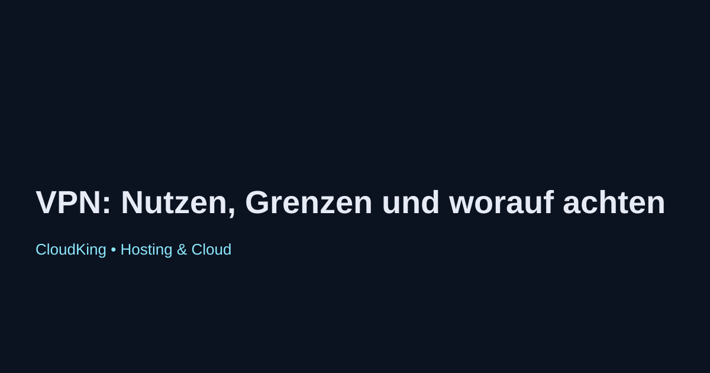

VPN: Nutzen, Grenzen und worauf achten
Virtuelle Private Netzwerke (VPNs) sind ein wichtiges Werkzeug für die Sicherung der Online-Privatsphäre und die Umgehung von geografischen Beschränkungen. Sie verschlüsseln den Internetverkehr und ermöglichen es Nutzern, anonym zu surfen.
Nutzen von VPNs
- Datenschutz: VPNs schützen die Privatsphäre der Nutzer, indem sie die IP-Adresse verbergen und den Internetverkehr verschlüsseln.
- Geoblocking umgehen: Nutzer können auf Inhalte zugreifen, die in ihrem Land möglicherweise gesperrt sind, indem sie sich mit Servern in anderen Ländern verbinden.
- Sicherheit in öffentlichen Netzwerken: VPNs bieten zusätzlichen Schutz, wenn Nutzer öffentliche WLAN-Netzwerke verwenden, die oft unsicher sind.
Grenzen von VPNs
- Geschwindigkeitseinbußen: Die Verschlüsselung kann die Internetgeschwindigkeit beeinträchtigen, was bei Streaming oder Online-Gaming problematisch sein kann.
- Rechtliche Aspekte: In einigen Ländern ist die Nutzung von VPNs eingeschränkt oder illegal. Nutzer sollten sich über die Gesetze in ihrem Land informieren.
- Vertrauen in Anbieter: Nicht alle VPN-Anbieter sind gleich. Einige könnten Protokolle führen oder Daten an Dritte weitergeben.
Worauf achten bei der Auswahl eines VPN-Anbieters
- Datenschutzrichtlinien: Achten Sie darauf, dass der Anbieter keine Logfiles speichert und transparente Datenschutzrichtlinien hat.
- Serverstandorte: Eine große Auswahl an Serverstandorten ermöglicht flexibleren Zugang zu Inhalten aus verschiedenen Ländern.
- Preis-Leistungs-Verhältnis: Vergleichen Sie die Preise und Funktionen verschiedener Anbieter, um das beste Angebot zu finden.
Zusammenfassend lässt sich sagen, dass VPNs wertvolle Werkzeuge für den Schutz der Online-Privatsphäre sind, jedoch auch einige Grenzen und Risiken mit sich bringen. Die sorgfältige Auswahl eines Anbieters ist entscheidend, um die gewünschten Vorteile zu maximieren.